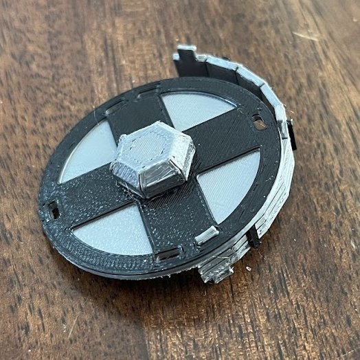
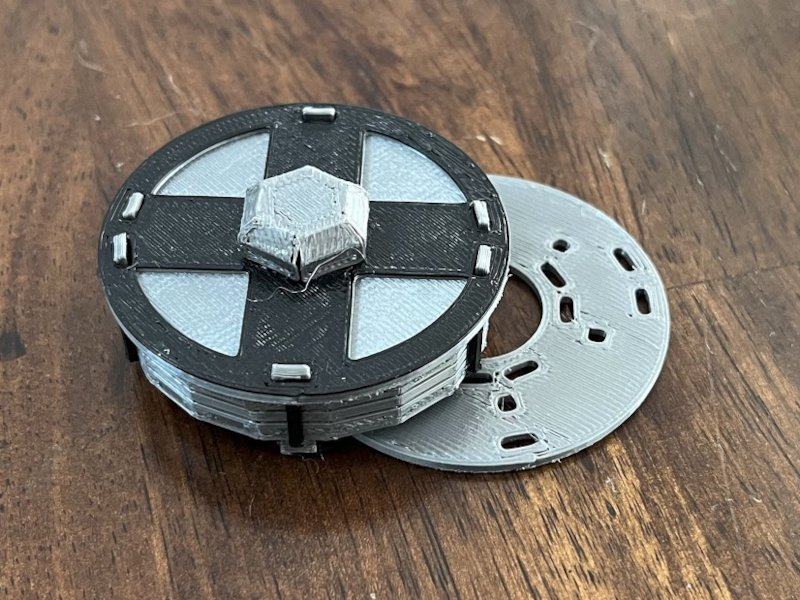
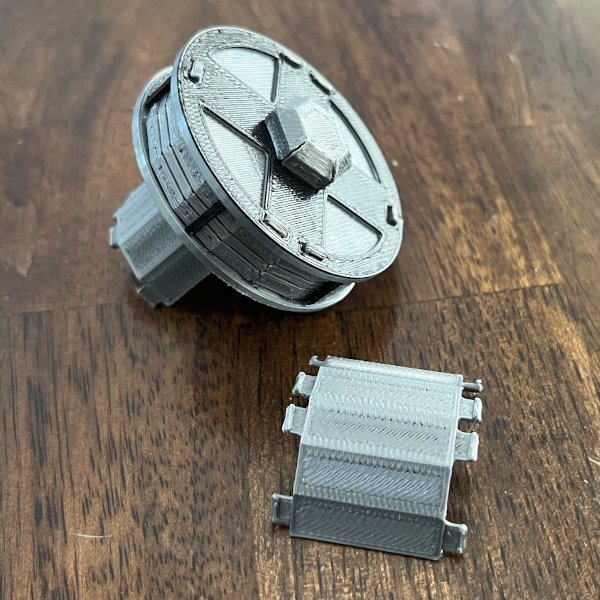
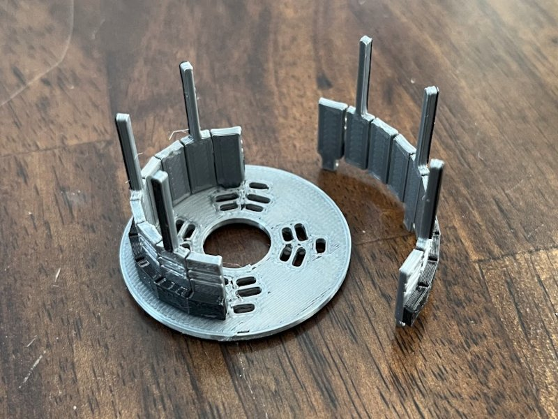
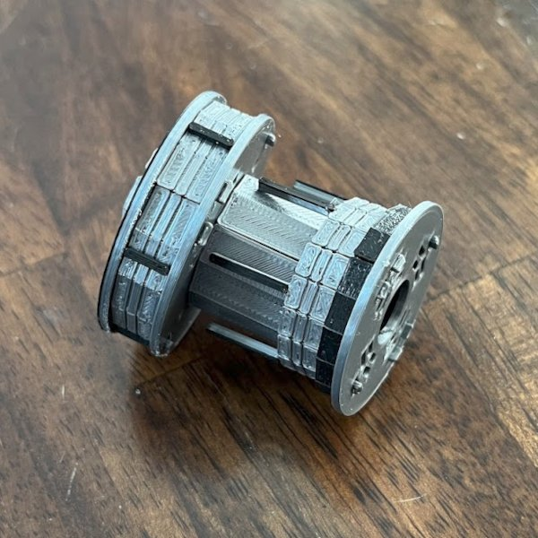
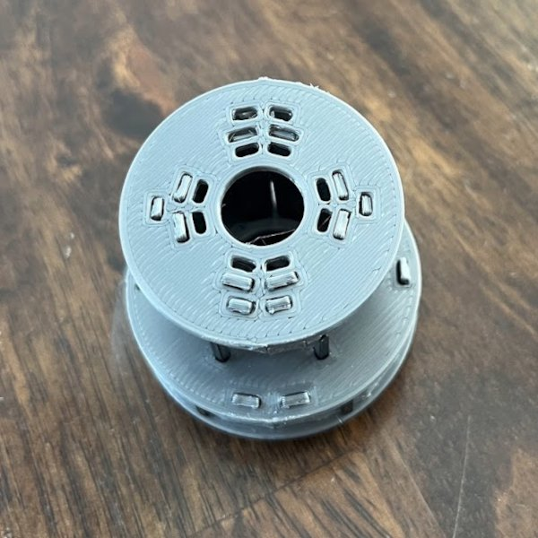
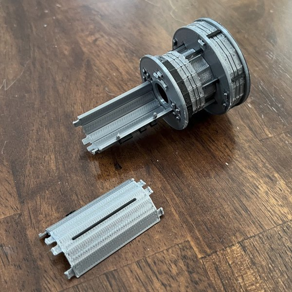
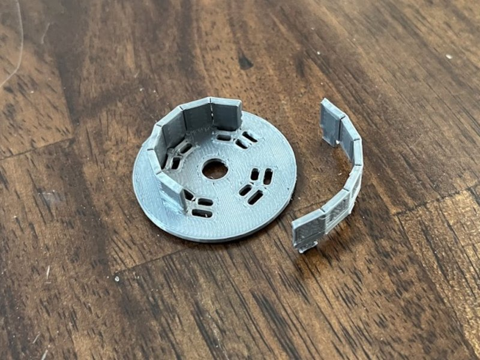
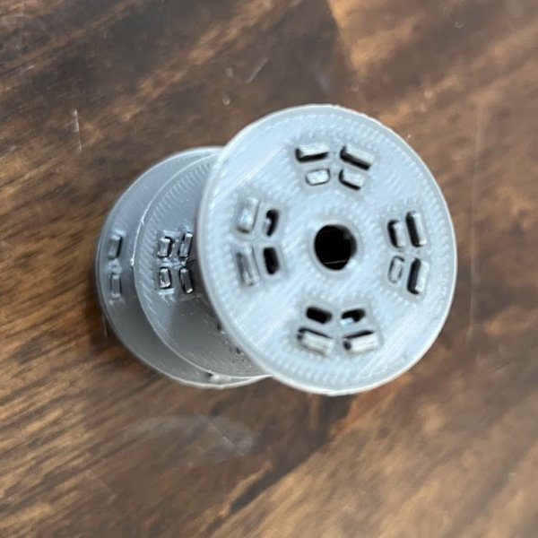

Begin with the nose (A). Bend all sides down and insert the tabs into the slots of disc (1). I've found that the easiest way to do this is to get all tabs near the correct position, then work your way around the perimeter securing one tab at a time.

Bend the each side of the cargo bay hull (B) into a half-circle and insert the tabs into disc (1). Again, I've found the tabs are easiest to insert by working around the perimeter one tab ad a time.

Push disc (2) against the bottom side of the cargo hull (B). Note the orientation of the tabs - pushing inward on the hull will make them go in more easily. Make sure they are lined correctly.

Bend the upper hull section (C) and insert the tabs into disc (2).

We're going to attach the upper outer hull (D) to disc (3) before attaching it to the rest of the assembly. Bend the outer hull (D) and insert the tabs disc (3).

We're going to attach the two parts we've built. Begin by lining up the parts, and insert the bars from the upper outer hull (D) into the holes in disc (2). Once all the bars are in, line up the tabs from the inner hull (C) with the slots in disc (3). Again, work around the perimeter of the disc, and apply inward pressure on the hull to fit the tabs into the slots.
 
Bend the bottom hull (E) and insert the tabs into disc (3).

Similar to step (5), we're going to attach the bottom hull ring (F) to disc (4) as a separate part. Do so now.

Similar to step (6), attach the two parts by lining up the tabs and pressing them together. Congratulations, your White Cat model is now complete!
